from utils import load_data
# This function creates randomly generated data
# X, y = load_data(6000)
# For stability, load data from files that were generated using the load_data
X = pd.read_csv('X_data.csv',index_col=0)
y_df = pd.read_csv('y_data.csv',index_col=0)
y = y_df['y']1 Introduction
In this project, we will build a risk score model for retinopathy in diabetes patients using logistic regression. This will be a Prognostic model for disease rather than a Diagnostic model. A Prognostic model predicts the future risk of a disease as opposed to a Diagnositic model, which would predict the presence of a disease now.
As we develop the model, we will consider the following topics:
- Data preprocessing
- Log transformations
- Standardization
- Basic Risk Models
- Logistic Regression
- C-index
- Interactions Terms
1.1 Diabetic Retinopathy
Retinopathy is an eye condition that causes changes to the blood vessels in the part of the eye called the retina. This often leads to vision changes or blindness. Diabetic patients are known to be at high risk for retinopathy.
1.2 Logistic Regression
Logistic regression is an appropriate analysis to use for predicting the probability of a binary outcome. In our case, this would be the probability of having or not having diabetic retinopathy. Logistic Regression is one of the most commonly used algorithms for binary classification. It is used to find the best fitting model to describe the relationship between a set of features (also referred to as input, independent, predictor, or explanatory variables) and a binary outcome label (also referred to as an output, dependent, or response variable). Logistic regression has the property that the output prediction is always in the range \([0,1]\). Sometimes this output is used to represent a probability from 0%-100%, but for straight binary classification, the output is converted to either \(0\) or \(1\) depending on whether it is below or above a certain threshold, usually \(0.5\).
First we will load in the dataset that we will use for training and testing our model.
X and y are Pandas DataFrames that hold the data for 6,000 diabetic patients.
The features (X) include the following fields: * Age: (years) * Systolic_BP: Systolic blood pressure (mmHg) * Diastolic_BP: Diastolic blood pressure (mmHg) * Cholesterol: (mg/DL)
We can use the head() method to display the first few records of each.
X.head()| Age | Systolic_BP | Diastolic_BP | Cholesterol | |
|---|---|---|---|---|
| 0 | 77.196340 | 85.288742 | 80.021878 | 79.957109 |
| 1 | 63.529850 | 99.379736 | 84.852361 | 110.382411 |
| 2 | 69.003986 | 111.349455 | 109.850616 | 100.828246 |
| 3 | 82.638210 | 95.056128 | 79.666851 | 87.066303 |
| 4 | 78.346286 | 109.154591 | 90.713220 | 92.511770 |
The target (y) is an indicator of whether or not the patient developed retinopathy.
- y = 1 : patient has retinopathy.
- y = 0 : patient does not have retinopathy.
y.head()0 1.0
1 1.0
2 1.0
3 1.0
4 1.0
Name: y, dtype: float64Before we build a model, let’s take a closer look at the distribution of our training data. To do this, we will split the data into train and test sets using a 75/25 split.
For this, we can use the built in function provided by sklearn library.
from sklearn.model_selection import train_test_split
X_train_raw, X_test_raw, y_train, y_test = train_test_split(X, y, train_size=0.75, random_state=0)Plot the histograms of each column of X_train below:
for col in X.columns:
X_train_raw.loc[:, col].hist()
plt.title(col)
plt.show()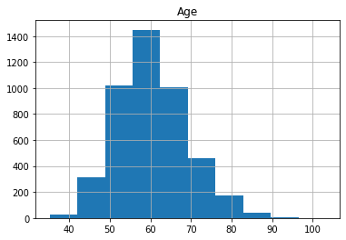
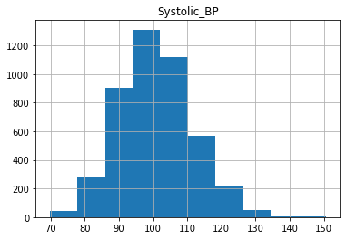
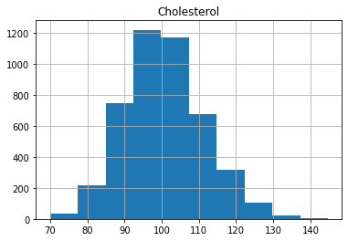
As we can see, the distributions have a generally bell shaped distribution, but with slight rightward skew.
Many statistical models assume that the data is normally distributed, forming a symmetric Gaussian bell shape (with no skew) more like the example below.
from scipy.stats import norm
data = np.random.normal(50,12, 5000)
fitting_params = norm.fit(data)
norm_dist_fitted = norm(*fitting_params)
t = np.linspace(0,100, 100)
plt.hist(data, bins=60, density=True)
plt.plot(t, norm_dist_fitted.pdf(t))
plt.title('Example of Normally Distributed Data')
plt.show()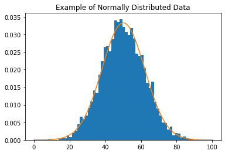
We can transform our data to be closer to a normal distribution by removing the skew. One way to remove the skew is by applying the log function to the data.
Let’s plot the log of the feature variables to see that it produces the desired effect.
for col in X_train_raw.columns:
np.log(X_train_raw.loc[:, col]).hist()
plt.title(col)
plt.show()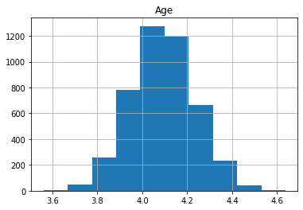
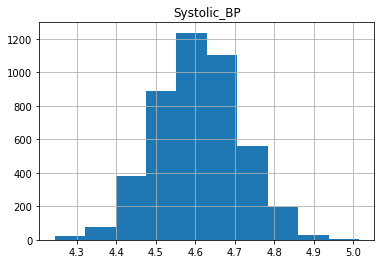
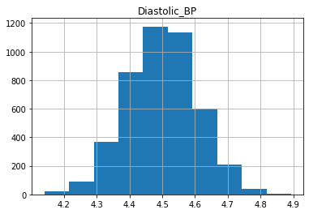
We can see that the data is more symmetric after taking the log.
Let’s now transform our data so that the distributions are closer to standard normal distributions.
First we will remove some of the skew from the distribution by using the log transformation. Then we will “standardize” the distribution so that it has a mean of zero and standard deviation of 1. Recall that a standard normal distribution has mean of zero and standard deviation of 1.
def make_standard_normal(df_train, df_test):
"""
In order to make the data closer to a normal distribution, take log
transforms to reduce the skew.
Then standardize the distribution with a mean of zero and standard deviation of 1.
Args:
df_train (dataframe): unnormalized training data.
df_test (dataframe): unnormalized test data.
Returns:
df_train_normalized (dateframe): normalized training data.
df_test_normalized (dataframe): normalized test data.
"""
# Remove skew by applying the log function to the train set, and to the test set
train_cols = df_train.columns
test_cols = df_test.columns
df_train_unskewed = df_train[train_cols].apply(lambda x: np.log(x))
df_test_unskewed = df_test[test_cols].apply(lambda x: np.log(x))
#calculate the mean and standard deviation of the training set
mean = df_train_unskewed.mean(axis=0)
stdev = df_train_unskewed.std(axis=0)
# standardize the training set
df_train_standardized = (df_train_unskewed - mean) / stdev
# standardize the test set (see instructions and hints above)
df_test_standardized = (df_test_unskewed - mean) / stdev
return df_train_standardized, df_test_standardized
# test
tmp_train = pd.DataFrame({'field1': [1,2,10], 'field2': [4,5,11]})
tmp_test = pd.DataFrame({'field1': [1,3,10], 'field2': [4,6,11]})
tmp_train_transformed, tmp_test_transformed = make_standard_normal(tmp_train,tmp_test)
print(f"Training set transformed field1 has mean {tmp_train_transformed['field1'].mean(axis=0):.4f} and standard deviation {tmp_train_transformed['field1'].std(axis=0):.4f} ")
print(f"Test set transformed, field1 has mean {tmp_test_transformed['field1'].mean(axis=0):.4f} and standard deviation {tmp_test_transformed['field1'].std(axis=0):.4f}")
print(f"Skew of training set field1 before transformation: {tmp_train['field1'].skew(axis=0):.4f}")
print(f"Skew of training set field1 after transformation: {tmp_train_transformed['field1'].skew(axis=0):.4f}")
print(f"Skew of test set field1 before transformation: {tmp_test['field1'].skew(axis=0):.4f}")
print(f"Skew of test set field1 after transformation: {tmp_test_transformed['field1'].skew(axis=0):.4f}")Training set transformed field1 has mean -0.0000 and standard deviation 1.0000
Test set transformed, field1 has mean 0.1144 and standard deviation 0.9749
Skew of training set field1 before transformation: 1.6523
Skew of training set field1 after transformation: 1.0857
Skew of test set field1 before transformation: 1.3896
Skew of test set field1 after transformation: 0.1371Transform training and test data
X_train, X_test = make_standard_normal(X_train_raw, X_test_raw)After transforming the training and test sets, we’ll expect the training set to be centered at zero with a standard deviation of \(1\).
We will avoid observing the test set during model training in order to avoid biasing the model training process, but let’s have a look at the distributions of the transformed training data.
for col in X_train.columns:
X_train[col].hist()
plt.title(col)
plt.show()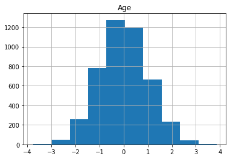
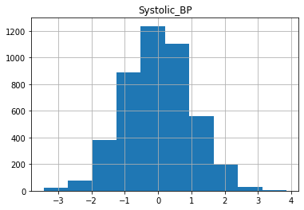
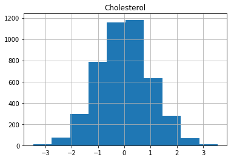
Now we are ready to build the risk model by training logistic regression with our data.
def lr_model(X_train, y_train):
# import the LogisticRegression class
from sklearn.linear_model import LogisticRegression
# create the model object
model = LogisticRegression()
# fit the model to the training data
model.fit(X_train, y_train)
#return the fitted model
return model
# Test
tmp_model = lr_model(X_train[0:3], y_train[0:3] )
print(tmp_model.predict(X_train[4:5]))
print(tmp_model.predict(X_train[5:6]))[1.]
[1.]Now that we’ve tested our model, we can go ahead and build it.
model_X = lr_model(X_train, y_train)## Evaluate the Model Using the C-index
Now that we have a model, we need to evaluate it. We’ll do this using the c-index. * The c-index measures the discriminatory power of a risk score. * Intuitively, a higher c-index indicates that the model’s prediction is in agreement with the actual outcomes of a pair of patients. * The formula for the c-index is: cindex = (concordant + 0.5 * ties) / permissible * A permissible pair is a pair of patients who have different outcomes. * A concordant pair is a permissible pair in which the patient with the higher risk score also has the worse outcome. * A tie is a permissible pair where the patients have the same risk score.
def cindex(y_true, scores):
'''
Input:
y_true (np.array): a 1-D array of true binary outcomes (values of zero or one)
0: patient does not get the disease
1: patient does get the disease
scores (np.array): a 1-D array of corresponding risk scores output by the model
Output:
c_index (float): (concordant pairs + 0.5*ties) / number of permissible pairs
'''
n = len(y_true)
assert len(scores) == n
concordant = 0
permissible = 0
ties = 0
# Two nested for loops to go through all unique pairs of patients
for i in range(n):
for j in range(i+1, n): #choose the range of j so that j>i
# Check if the pair is permissible (the patient outcomes are different)
if y_true[i] != y_true[j]:
# Count the pair if it's permissible
permissible += 1
# For permissible pairs, check if they are concordant or are ties
# check for ties in the score
if scores[i] == scores[j]:
# count the tie
ties += 1
# if it's a tie, we don't need to check patient outcomes, continue to the top of the for loop.
continue
# case 1: patient i doesn't get the disease, patient j does
if y_true[i] == 0 and y_true[j] == 1:
# Check if patient i has a lower risk score than patient j
if scores[i] < scores[j]:
# count the concordant pair
concordant += 1
# Otherwise if patient i has a higher risk score, it's not a concordant pair.
# Already checked for ties earlier
# case 2: patient i gets the disease, patient j does not
if y_true[i] == 1 and y_true[j] == 0:
# Check if patient i has a higher risk score than patient j
if scores[i] > scores[j]:
#count the concordant pair
concordant += 1
# Otherwise if patient i has a lower risk score, it's not a concordant pair.
# We already checked for ties earlier
# calculate the c-index using the count of permissible pairs, concordant pairs, and tied pairs.
c_index = (concordant + 0.5 * ties) / permissible
return c_index
# test
y_true = np.array([1.0, 0.0, 0.0, 1.0])
# Case 1
scores = np.array([0, 1, 1, 0])
print('Case 1 Output: {}'.format(cindex(y_true, scores)))
# Case 2
scores = np.array([1, 0, 0, 1])
print('Case 2 Output: {}'.format(cindex(y_true, scores)))
# Case 3
scores = np.array([0.5, 0.5, 0.0, 1.0])
print('Case 3 Output: {}'.format(cindex(y_true, scores)))
cindex(y_true, scores)Case 1 Output: 0.0
Case 2 Output: 1.0
Case 3 Output: 0.8750.875## Evaluate the Model on the Test Set
Now, we can evaluate your trained model on the test set.
To get the predicted probabilities, we use the predict_proba method. This method will return the result from the model before it is converted to a binary 0 or 1. For each input case, it returns an array of two values which represent the probabilities for both the negative case (patient does not get the disease) and positive case (patient the gets the disease).
scores = model_X.predict_proba(X_test)[:, 1]
c_index_X_test = cindex(y_test.values, scores)
print(f"c-index on test set is {c_index_X_test:.4f}")c-index on test set is 0.8182Let’s plot the coefficients to see which variables (patient features) are having the most effect.
coeffs = pd.DataFrame(data = model_X.coef_, columns = X_train.columns)
coeffs.T.plot.bar(legend=None);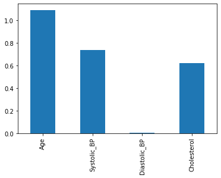
We can try to improve the model by including interaction terms. * An interaction term is the product of two variables. * For example, if we have data \[ x = [x_1, x_2]\] * We could add the product so that: \[ \hat{x} = [x_1, x_2, x_1*x_2]\]
def add_interactions(X):
"""
Add interaction terms between columns to dataframe.
Args:
X (dataframe): Original data
Returns:
X_int (dataframe): Original data with interaction terms appended.
"""
features = X.columns
m = len(features)
X_int = X.copy(deep=True)
# 'i' loops through all features in the original dataframe X
for i in range(m):
# get the name of feature 'i'
feature_i_name = features[i]
# get the data for feature 'i'
feature_i_data = X[feature_i_name]
# choose the index of column 'j' to be greater than column i
for j in range(i+1, m):
# get the name of feature 'j'
feature_j_name = features[j]
# get the data for feature j'
feature_j_data = X[feature_j_name]
# create the name of the interaction feature by combining both names
# example: "apple" and "orange" are combined to be "apple_x_orange"
feature_i_j_name = feature_i_name + '_x_' + feature_j_name
# Multiply the data for feature 'i' and feature 'j'
# store the result as a column in dataframe X_int
X_int[feature_i_j_name] = X_int[feature_i_name] * X_int[feature_j_name]
return X_int
# Test
print("Original Data")
print(X_train.loc[:, ['Age', 'Systolic_BP']].head())
print("Data w/ Interactions")
print(add_interactions(X_train.loc[:, ['Age', 'Systolic_BP']].head()))Original Data
Age Systolic_BP
1824 -0.912451 -0.068019
253 -0.302039 1.719538
1114 2.576274 0.155962
3220 1.163621 -2.033931
2108 -0.446238 -0.054554
Data w/ Interactions
Age Systolic_BP Age_x_Systolic_BP
1824 -0.912451 -0.068019 0.062064
253 -0.302039 1.719538 -0.519367
1114 2.576274 0.155962 0.401800
3220 1.163621 -2.033931 -2.366725
2108 -0.446238 -0.054554 0.024344
X_train_int = add_interactions(X_train)
X_test_int = add_interactions(X_test)## Evaluate the Improved Model
Now we can train the new and improved version of the model.
model_X_int = lr_model(X_train_int, y_train)Let’s evaluate our new model on the test set.
scores_X = model_X.predict_proba(X_test)[:, 1]
c_index_X_int_test = cindex(y_test.values, scores_X)
scores_X_int = model_X_int.predict_proba(X_test_int)[:, 1]
c_index_X_int_test = cindex(y_test.values, scores_X_int)
print(f"c-index on test set without interactions is {c_index_X_test:.4f}")
print(f"c-index on test set with interactions is {c_index_X_int_test:.4f}")c-index on test set without interactions is 0.8182
c-index on test set with interactions is 0.8281We can see that the model with interaction terms performs a bit better than the model without interactions.
Now let’s take another look at the model coefficients to try and see which variables made a difference.
int_coeffs = pd.DataFrame(data = model_X_int.coef_, columns = X_train_int.columns)
int_coeffs.T.plot.bar();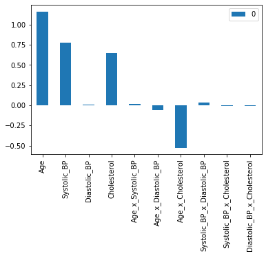
We can see that Age, Systolic_BP, and Cholesterol have a positive coefficient. This means that a higher value in these three features leads to a higher prediction probability for the disease. You also may notice that the interaction of Age x Cholesterol has a negative coefficient. This means that a higher value for the Age x Cholesterol product reduces the prediction probability for the disease.
To understand the effect of interaction terms, let’s compare the output of the model we’ve trained on sample cases with and without the interaction.
index = index = 3432
case = X_train_int.iloc[index, :]
print(case)Age 2.502061
Systolic_BP 1.713547
Diastolic_BP 0.268265
Cholesterol 2.146349
Age_x_Systolic_BP 4.287400
Age_x_Diastolic_BP 0.671216
Age_x_Cholesterol 5.370296
Systolic_BP_x_Diastolic_BP 0.459685
Systolic_BP_x_Cholesterol 3.677871
Diastolic_BP_x_Cholesterol 0.575791
Name: 5970, dtype: float64We can see that they have above average Age and Cholesterol. We can now see what our original model would have output by zero-ing out the value for Cholesterol and Age.
new_case = case.copy(deep=True)
new_case.loc["Age_x_Cholesterol"] = 0
new_caseAge 2.502061
Systolic_BP 1.713547
Diastolic_BP 0.268265
Cholesterol 2.146349
Age_x_Systolic_BP 4.287400
Age_x_Diastolic_BP 0.671216
Age_x_Cholesterol 0.000000
Systolic_BP_x_Diastolic_BP 0.459685
Systolic_BP_x_Cholesterol 3.677871
Diastolic_BP_x_Cholesterol 0.575791
Name: 5970, dtype: float64
print(f"Output with interaction: \t{model_X_int.predict_proba([case.values])[:, 1][0]:.4f}")
print(f"Output without interaction: \t{model_X_int.predict_proba([new_case.values])[:, 1][0]:.4f}")Output with interaction: 0.9448
Output without interaction: 0.9965We see that the model is less confident in its prediction with the interaction term than without (the prediction value is lower when including the interaction term). With the interaction term, the model has adjusted for the fact that the effect of high cholesterol becomes less important for older patients compared to younger patients.
2 Conclusion
In this project, we will built a prognostic risk score model for retinopathy in diabetes patients using logistic regression.
We considered the following topics:
- Data preprocessing
- Log transformations
- Standardization
- Basic Risk Models
- Logistic Regression
- C-index
- Interactions Terms